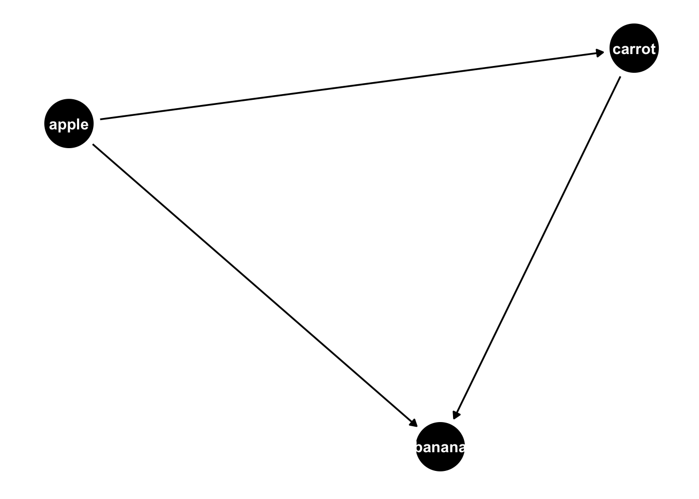
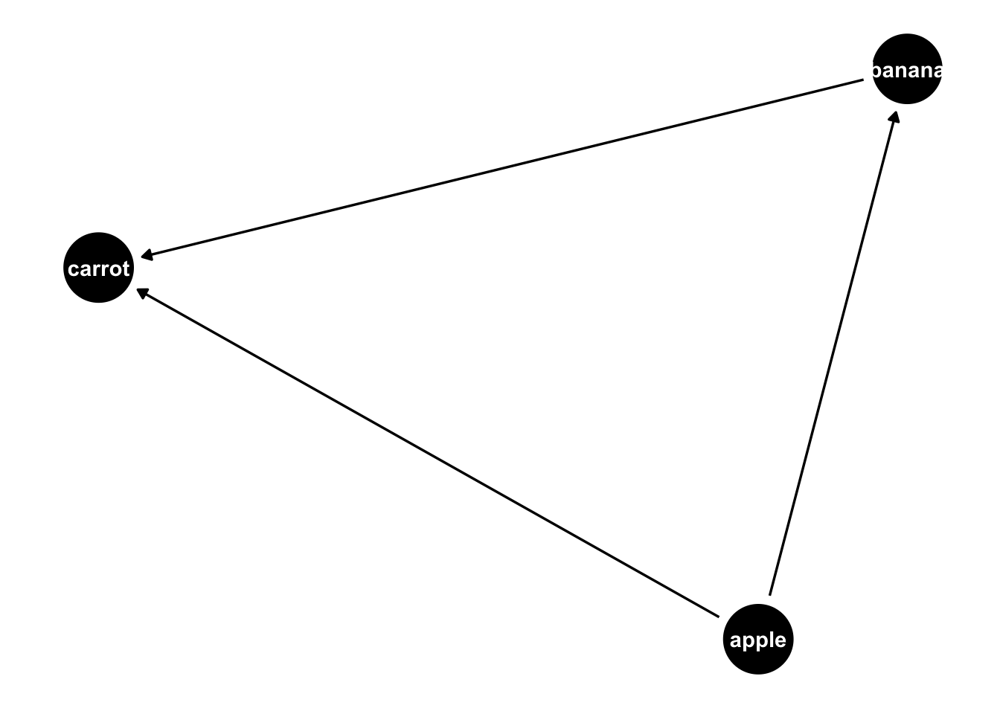

Chapter 15 Causality from observational data
Last updated: 17 March 2021.
TODO: Replace the arm matching with https://kosukeimai.github.io/MatchIt/index.html
Required reading
- Angelucci, Charles, and Julia Cagé, 2019, ‘Newspapers in times of low advertising revenues,’ American Economic Journal: Microeconomics, vol. 11, no. 3, pp. 319-364, DOI: 10.1257/mic.20170306, available at: https://www.aeaweb.org/articles?id=10.1257/mic.20170306.
- Better Evaluation, ‘Regression Discontinuity,’ https://www.betterevaluation.org/en/evaluation-options/regressiondiscontinuity
- Dagan, Noa, Noam Barda, Eldad Kepten, Oren Miron, Shay Perchik, Mark A. Katz, Miguel A. Hernán, Marc Lipsitch, Ben Reis, and Ran D. Balicer, 2021, ‘BNT162b2 mRNA Covid-19 vaccine in a nationwide mass vaccination setting,’ New England Journal of Medicine, 24 February, https://www.nejm.org/doi/full/10.1056/NEJMoa2101765.
- Eggers, Andrew C., Anthony Fowler, Jens Hainmueller, Andrew B. Hall, and James M. Snyder Jr, 2015, ‘On the validity of the regression discontinuity design for estimating electoral effects: New evidence from over 40,000 close races,’ American Journal of Political Science, 59 (1), pp. 259-274
- Gelman, Andrew, 2019, ‘Another Regression Discontinuity Disaster and what can we learn from it,’ 25 June, https://statmodeling.stat.columbia.edu/2019/06/25/another-regression-discontinuity-disaster-and-what-can-we-learn-from-it/.
- Gelman, Andrew, Jennifer Hill and Aki Vehtari, 2020, Regression and Other Stories, Cambridge University Press, Chs 18 - 21.
- Gertler, Paul, Sebastian Martinez, Patrick Premand, Laura Rawlings, and Christel Vermeersch, ‘Impact Evaluation in Practice,’ Chapter 5 - 8.
- McElreath, Richard, 2020, Statistical Rethinking, 2nd Edition, CRC Press, Ch 14.
- Meng, Xiao-Li, 2021, ‘What Are the Values of Data, Data Science, or Data Scientists?’ Harvard Data Science Review, https://doi.org/10.1162/99608f92.ee717cf7, https://hdsr.mitpress.mit.edu/pub/bj2dfcwg/release/2.
- Riederer, Emily, 2021, ‘Causal design patterns for data analysts,’ 30 January, https://emilyriederer.netlify.app/post/causal-design-patterns/
- Sekhon, Jasjeet and Rocio Titiunik, 2016, ‘Understanding Regression Discontinuity Designs As Observational Studies,’ Observational Studies 2 (2016) 174-182, http://sekhon.berkeley.edu/papers/SekhonTitiunik2016-OS.pdf.
- Wong, Jeffrey, and Colin McFarland, 2020, ‘Computational Causal Inference at Netflix,’ Netflix Technology Blog, 11 Aug, https://netflixtechblog.com/computational-causal-inference-at-netflix-293591691c62.
Required viewing
- Gelman, Andrew, 2020 ‘100 Stories of Causal Inference,’ 4 August, https://www.youtube.com/watch?v=jnI5KI843Lk.
- King, Gary, 2020, ‘Research Designs,’ Lectures on Quantitative Social Science Methods 1, https://youtu.be/SBwPLwVOb7s.
- Kuriwaki, Shiro, 2020, ‘Difference-in-Differences Estimation in R (parts 1 and 2),’ 18 April, https://vimeo.com/409267138 and https://vimeo.com/409267190.
- Kuriwaki, Shiro, 2020, ‘Instrumental variables in R,’ 11 April, https://vimeo.com/406629459.
- Kuriwaki, Shiro, 2020, ‘Regression Discontinuity in R (parts 1 and 2),’ 25 March, https://vimeo.com/400826628 and https://vimeo.com/400826660.
- Oostrom, Tamar, 2021, ‘Funding of Clinical Trials and Reported Drug Efficacy,’ 2 March, https://youtu.be/DdnpWS9Km5U.
- Riederer, Emily, 2021, ‘Observational Causal Inference,’ Toronto Data Workshop, 15 February, https://youtu.be/VP3BBZ7poc0.
Recommended reading
- Alexander, Monica, Polimis, Kivan, and Zagheni, Emilio, 2019,’ The impact of Hurricane Maria on out-migration from Puerto Rico: Evidence from Facebook data’, Population and Development Review. (Example of using diff-in-diff to measure the effect of Hurricane Maria.)
- Alexander, Rohan, and Zachary Ward, 2018, ‘Age at arrival and assimilation during the age of mass migration,’ The Journal of Economic History, 78, no. 3, 904-937. (Example where I used differences between brothers to estimate the effect of education.)
- Angrist, Joshua D., and Jörn-Steffen Pischke, 2008, Mostly harmless econometrics: An empiricist’s companion, Princeton University Press, Chapter 4.
- Angrist, Joshua D., and Jörn-Steffen Pischke, 2008, Mostly harmless econometrics: An empiricist’s companion, Princeton University Press, Chapter 6.
- Angrist, Joshua D., and Jörn-Steffen Pischke, 2008, Mostly harmless econometrics: An empiricist’s companion, Princeton University Press, Chapters 3.3.2 and 5.
- Austin, Peter C., 2011, ‘An Introduction to Propensity Score Methods for Reducing the Effects of Confounding in Observational Studies,’ Multivariate Behavioral Research, vol. 46, no. 3, pp.399-424. (Broad overview of propensity score matching, with a nice discussion of the comparison to randomised controlled trials.)
- Baker, Andrew, 2019, ‘Difference-in-Differences Methodology,’ 25 September, https://andrewcbaker.netlify.app/2019/09/25/difference-in-differences-methodology/.
- Coppock, Alenxader, and Donald P. Green, 2016, ‘Is Voting Habit Forming? New Evidence from Experiments and Regression Discontinuities,’ American Journal of Political Science, Volume 60, Issue 4, pp. 1044-1062, available at: https://onlinelibrary.wiley.com/doi/abs/10.1111/ajps.12210. (Has code and data.)
- Cunningham, Scott, ‘Causal Inference: The Mixtape,’ Chapter ‘Instrumental variables,’ http://www.scunning.com/causalinference_norap.pdf.
- Cunningham, Scott, ‘Causal Inference: The Mixtape,’ chapter ‘Regression discontinuity,’ http://www.scunning.com/causalinference_norap.pdf.
- Cunningham, Scott, Causal Inference: The Mixtape, chapters ‘Matching and subclassifications’ and ‘Differences-in-differences,’ http://www.scunning.com/causalinference_norap.pdf. (Very well-written notes on diff-in-diff.)
- Dell, Melissa, Pablo Querubin, 2018, ‘Nation Building Through Foreign Intervention: Evidence from Discontinuities in Military Strategies,’ The Quarterly Journal of Economics, Volume 133, Issue 2, pp. 701–764, https://doi.org/10.1093/qje/qjx037.
- Evans, David, 2013, ‘Regression Discontinuity Porn,’ World Bank Blogs, 16 November, https://blogs.worldbank.org/impactevaluations/regression-discontinuity-porn.
- Gelman, Andrew, 2019, ‘Another Regression Discontinuity Disaster and what can we learn from it,’ Statistical Modeling, Causal Inference, and Social Science, 25 June, https://statmodeling.stat.columbia.edu/2019/06/25/another-regression-discontinuity-disaster-and-what-can-we-learn-from-it/.
- Gelman, Andrew, and Guido Imbens, 2019, “Why high-order polynomials should not be used in regression discontinuity designs,” Journal of Business & Economic Statistics, 37, pp. 447-456.
- Gelman, Andrew, and Jennifer Hill, 2007, Data Analysis Using Regression and Muiltilevel/Hierarchical Models, Chapter 10, pp. 207-215.
- Grogger, Jeffrey, Andreas Steinmayr, Joachim Winter, 2020, ‘The Wage Penalty of Regional Accents,’ NBER Working Paper No. 26719.
- Harris, Rich, Mlacki Migliozzi and Niraj Chokshi, ‘13,000 Missing Flights: The Global Consequences of the Coronavirus,’ New York Times, 21 February 2020. freely available here (if you make an account): https://www.nytimes.com/interactive/2020/02/21/business/coronavirus-airline-travel.html.
- Imai, Kosuke, 2017, Quantitative Social Science: An Introduction, Princeton University Press, Ch 2.5.
- Imbens, Guido W., and Thomas Lemieux, 2008, ‘Regression discontinuity designs: A guide to practice,’ Journal of Econometrics, vol. 142, no. 2, pp. 615-635.
- King, Gary, and Richard Nielsen, 2019, ‘Why Propensity Scores Should Not Be Used for Matching,’ Political Analysis. (Academic paper on the limits of propensity score matching. Propensity score matching was a big thing in the 90s but everyone knew about these weaknesses and so it died off. Lately, there has been a resurgence because of the CS/ML folks using it without thinking so King and Nielsen wrote a nice paper about the flaws. I mean, you can’t say you weren’t warned.)
- Myllyvirta, Lauri, 2020, ‘Analysis: Coronavirus has temporarily reduced China’s CO2 emissions by a quarter,’ Carbon Brief, 19 February, https://www.carbonbrief.org/analysis-coronavirus-has-temporarily-reduced-chinas-co2-emissions-by-a-quarter.
- Saeed, Sahar, Erica E. M. Moodie, Erin C. Strumpf, Marina B. Klein, 2019, ‘Evaluating the impact of health policies: using a difference-in-differences approach,’ International Journal of Public Health, 64, pp. 637–642, https://doi.org/10.1007/s00038-018-1195-2.
- Taddy, Matt, 2019, Business Data Science, Chapter 5, pp. 146-162.
- Tang, John, 2015, ‘Pollution havens and the trade in toxic chemicals: evidence from U.S. trade flows,’ Ecological Economics, vol. 112, pp. 150-160. (Example of using diff-in-diff to estimate pollution.)
- Travis, D.J., Carleton, A.M. and Lauritsen, R.G., 2004. ‘Regional variations in US diurnal temperature range for the 11–14 September 2001 aircraft groundings: Evidence of jet contrail influence on climate,’ Journal of climate, 17(5), pp.1123-1134.
- Travis, David J., Andrew M. Carleton, and Ryan G. Lauritsen. “Contrails reduce daily temperature range.” Nature, 418, no. 6898 (2002): 601-601.
- Valencia Caicedo, Felipe. ‘The mission: Human capital transmission, economic persistence, and culture in South America.’ The Quarterly Journal of Economics 134.1 (2019): 507-556. (Data available at: Valencia Caicedo, Felipe, 2018, “Replication Data for: ‘The Mission: Human Capital Transmission, Economic Persistence, and Culture in South America’,” https://doi.org/10.7910/DVN/ML1155, Harvard Dataverse, V1.).
- Zinovyeva, Natalia and Maryna Tverdostup, 2019, ‘Why are women who earn slightly more than their husbands hard to find?’ 10 June, https://blogs.lse.ac.uk/businessreview/2019/06/10/why-are-women-who-earn-slightly-more-than-their-husbands-hard-to-find/.
Key concepts/skills/etc
- Essential matching methods.
- Weaknesses of matching.
- Difference-in-differences.
- Identifying opportunities for instrumental variables.
- Implementing instrumental variables.
- Challenges to the validity of instrumental variables.
- Reading in foreign data.
- Difference in differences.
- Replicating work.
- Displaying multiple regression results.
- Discussing results.
- Generating simulated data.
- Understanding regression discontinuity and implementing it both manually and using packages.
- Appreciating the threats to the validity of regression discontinuity.
Key libraries
broomtidyverseestimatrtidyversehavenhuxtablescalestidyversebroomrdrobusttidyverse
Key functions/etc
tidy()lm()iv_robust()dollar_format()hux_reg()lm()mutate_at()read_dta()lm()tidy()rdrobust()()
Quiz
- Sharla Gelfand has been ‘(s)haring two #rstats functions most days - one I know and love, and one that’s new to me!’ Please go to Sharla’s GitHub page: https://github.com/sharlagelfand/twofunctionsmostdays. Please find a package that she mentions that you have never used. Please find the relevant website for the package. Please describe what the package does and a context in which it could be useful to you.
- Sharla Gelfand has been ‘(s)haring two #rstats functions most days - one I know and love, and one that’s new to me!’ Please go to Sharla’s GitHub page: https://github.com/sharlagelfand/twofunctionsmostdays. Please find a function that she mentions that you have never used. Please look at the help file for that function. Please detail the arguments of the function, and a context in which it could be useful to you.
- What is propensity score matching? If you were matching people, then what are some of the features that you would like to match on? What sort of ethical questions does collecting and storing such information raise for you?
- Putting to one side, the ethical issues, what are some statistical weaknesses with propensity score matching?
- What is the key assumption when using diff-in-diff?
- Please read the fascinating article in The Markup about car insurance algorithms: https://themarkup.org/allstates-algorithm/2020/02/25/car-insurance-suckers-list. Please read the article and tell me what you think. You may wish to focus on ethical, legal, social, statistical, or other, aspects.
- Please go to the GitHub page related to the fascinating article in The Markup about car insurance algorithms: https://github.com/the-markup/investigation-allstates-algorithm. What is great about their work? What could be improved?
- What are the fundamental features of regression discontinuity design?
- What are the conditions that are needed in order for RDD to be able to be used?
- Can you think of a situation in your own life where RDD may be useful?
- What are some threats to the validity of RDD estimates?
- Please look at the
performancepackage: https://easystats.github.io/performance/index.html. What are some features of this package that may be useful in your own work? - What do you think about using COVID-19 in an RDD setting? Statistically? Ethically?
- Please read and reproduce the main findings from Eggers, Fowler, Hainmueller, Hall, Snyder, 2015.
- What is an instrumental variable?
- What are some circumstances in which instrumental variables might be useful?
- What conditions must instrumental variables satisfy?
- Who were some of the early instrumental variable authors?
- Can you please think of and explain an application of instrumental variables in your own life?
- What is the key assumption in difference-in-differences
- Parallel trends.
- Heteroscedasticity.
- If you’re using regression discontinuity, whare are some aspects to be aware of and think really hard about (select all that apply)?
- Is the cut-off free of manipulation?
- Is the forcing function continuous?
- To what extent is the functional form driving the estimate?
- Would different fitted lines affect the results?
- What is the main reason that Oostrom (2021) finds that the outcome of an RCT can depend on who is funding it (pick one)?
- Publication bias
- Explicit manipulation
- Specialisation
- Larger number of arms
- What is the key coefficient of interest in Angelucci and Cagé, 2019 (pick one)?
- \(\beta_0\)
- \(\beta_1\)
- \(\lambda\)
- \(\gamma\)
- The instrumental variable is (please pick all that apply):
- Correlated with the treatment variable.
- Not correlated with the outcome.
- Heteroskedastic.
- Who are the two candidates to have invented instrumental variables?
- Sewall Wright
- Philip G. Wright
- Sewall Cunningham
- Philip G. Cunningham
- What are the two main assumptions of instrumental variables?
- Exclusion Restriction.
- Relevance.
- Ignorability.
- Randomization.
- According to Meng, 2021, ‘Data science can persuade via…’ (pick all that apply):
- the careful establishment of evidence from fair-minded and high-quality data collection
- processing and analysis
- the honest interpretation and communication of findings
- large sample sizes
- According to Reiderer, 2021, if I have ‘disjoint treated and untreated groups partitioned by a sharp cut-off’ then which method should I use to measure the local treatment effect at the juncture between groups (pick one)?
- regression discontinuity
- matching
- difference-in-differences
- event study methods
- According to Reiderer, 2021, ‘Causal inference requires investment in’ (pick all that apply):
- data management
- domain knowledge
- probabilistic reasoning
- data science
- I am an Australian 30-39 year old male living in Toronto with one child and a PhD. Which of the following do you think I would match most closely with and why (please explain in a paragraph or two)?
- An Australian 30-39 year old male living in Toronto with one child and a bachelors degree
- A Canadian 30-39 year old male living in Toronto with one child and a PhD
- An Australian 30-39 year old male living in Ottawa with one child and a PhD
- A Canadian 18-29 year old male living in Toronto with one child and a PhD
- In your most disdainful tone (jokes, I love DAGs), what is a DAG (in your own words please)?
- What is a confounder (please select one answer)?
- A variable, z, that causes both x and y, where x also causes y.
- A variable, z, that is caused by both x and y, where x also causes y.
- A variable, z, that causes y and is caused by x, where x also causes y.
- What is a mediator (please select one answer)?
- A variable, z, that causes y and is caused by x, where x also causes y.
- A variable, z, that causes both x and y, where x also causes y.
- A variable, z, that is caused by both x and y, where x also causes y.
- What is a collider (please select one answer)?
- A variable, z, that causes both x and y, where x also causes y.
- A variable, z, that causes y and is caused by x, where x also causes y.
- A variable, z, that is caused by both x and y, where x also causes y.
- Please talk through a brief example of when you may want to be very careful about checking for Simpson’s paradox.
- Please talk through a brief example of when you may want to be very careful about checking for Berkson’s paradox.
- According to McElreath (2020, 162) ‘Regression will not sort it out. Regression is indeed an oracle, but a cruel one. It speaks in riddles and delights in punishing us for…’ (please select one answer)?
- overcomplicating models.
- asking bad questions.
- using bad data.
- Is a model that fits the small or large world more important to you, and why?
- According to Gebru et al, 2020, p.2, a datasheet should document a dataset’s (please select all that apply):
- composition.
- recommended uses.
- motivation.
- collection process.
15.1 Introduction
Life it grand when you can conduct experiments to be able to speak to causality. But what if you can only run the survey - you can’t run an experiment? Here we begin our discussion of the circumstances and methods that would allow you to nonetheless speak to causality. We use (relatively) simple methods, in sophisticated, well-developed, ways (cf, much of what is done these days) and our applied statistics draw from a variety of social sciences including economics, and political science.
Following the publication of Dagan et al. (2021), one of the authors tweeted (slight edits for formatting):
We’ve just confirmed the effectiveness of the Pfizer-BioNTech vaccine outside of randomized trials. Yes, great news, but let’s talk about methodological issues that arise when using observational data to estimate vaccine effectiveness.
A critical concern in observational studies of vaccine effectiveness is confounding: Suppose that people who get vaccinated have, on average, a lower risk of infection/disease than those who don’t get vaccinated. Then, even if the vaccine were useless, it’d look beneficial.
To adjust for confounding: We start by identifying potential confounders. For example: Age (vaccination campaigns prioritize older people and older people are more likely to develop severe disease). Then we choose a valid adjustment method. In our paper, we matched on age. After age adjustment, how do we know if there is residual confounding? Here is one way to go about that: We know from the previous randomized trial that the vaccine has no effect in the first few days. So we check whether matching on age suffices to replicate that finding. No, it doesn’t. After matching on age (and sex), the curves of infection start to diverge from day 0, which indicates that the vaccinated had a lower risk of infection than the unvaccinated. Conclusion: adjustment for age and sex is insufficient.
We learned that we had to match on other COVID-19 risk factors, e.g., location, comorbidities, healthcare use… And we could do so with high-quality data from the Clalit Research Institute, part of a health services organization that covers >50% of the Israeli population. As an example, a vaccinated 76 year-old Arab male from a specific neighborhood who received 4 influenza vaccines in the last 5 years and had 2 comorbidities was matched with an unvaccinated Arab male from the same neighborhood, aged 76-77, with 3-4 influenza vaccines and 2 comorbidities. After matching on all those risk factors, the curves of infection start to diverge after day ~12, as expected if the vaccinated and the unvaccinated had a comparable risk of infection. Using this “negative control,” we provide evidence against large residual confounding.
This is a good illustration of how randomized trials and observational studies complement each other for better and more efficient #causalinference. First, a randomized trial is conducted to estimate the effectiveness of the vaccine to prevent symptomatic infection, but… the trial’s estimates for severe disease and specific age groups are imprecise. Second, an observational analysis emulates a #targettrial (an order of magnitude greater) and confirms the vaccine’s effectiveness on severe disease and in different age groups. However… the observational study needs the trial’s findings as a benchmark to guide the data analysis and strengthen the quality of the causal inference.
Randomized trials & Observational studies working together. The best of both worlds. Let’s keep doing it after the pandemic. What a luxury having been able to think about these issues with my colleagues Noa Dagan, Noam Barda, Marc Lipsitch, Ben Reis, and Ran D. Balicer. We hope that our experience is helpful for researchers around the world who use observational data to estimate vaccine effectiveness.
Miguel Hernán, 24 Februrary 2021.
This is what this chapter is about. How we can nonetheless be comfortable making causal statements, even when we can’t run A/B tests or RCTs. Indeed, in what circumstances may we actually prefer to not run those or to run observational-based approaches in addition to them. We cover three of the major methods that are in popular use these days: difference-in-differences; regression discontinuity; and instrumental variables.
15.2 DAGs and trying not to be tricked by the data
15.2.1 DAGs and confounding
When we are discussing causality it can help to be very specific about what we mean. It’s easy to get caught up in the data that it tricks you. It’s important to think really hard. One framework to help with this that has become popular recently is the use of directed acyclic graph (DAG), which is essentially just a fancy name for a flow diagram. A DAG involves drawing arrows between your variables indicating the relationship between them. We will use the DiagrammeR package to draw them (Iannone 2020), because that provides quite a lot of control (Figure 15.1). However it can be a little finicky and if you’re just looking to do something really quickly then the ggdag package can be useful (Barrett 2021b). The code to draw these DAGs draws heavily on Igelström (2020).
library(DiagrammeR)
DiagrammeR::grViz("
digraph {
graph [ranksep = 0.2]
node [shape = plaintext]
x
y
edge [minlen = 2, arrowhead = vee]
x->y
{ rank = same; x; y }
}
")Figure 15.1: Using a DAG to illustrate perceived relationships
In this example, we claim that \(x\) causes \(y\). We could build another where the situation is less clear. I find all the \(x\) and \(y\) very confusing, so will change to fruits (Figure 15.2).
DiagrammeR::grViz("
digraph {
graph [ranksep = 0.2]
node [shape = plaintext]
Apple
Banana
Carrot
edge [minlen = 2, arrowhead = vee]
Apple->Banana
Carrot->Apple
Carrot->Banana
{ rank = same; Apple; Banana }
}
")Figure 15.2: Carrot as a confounder
In this case we again think \(apple\) causes \(banana\). But it’s also clear that \(carrot\) causes \(banana\), and \(carrot\) also causes \(apple\). That relationship is a ‘backdoor path,’ and would create spurious correlation in our analysis. We may think that changes in \(apple\) are causing changes in \(banana\), but it’s actually that \(carrot\) is changing them both and hence that variable is called a ‘confounder.’
There is an excellent discussion by Hernan and Robins (2020, 83):
Suppose an investigator conducted an observational study to answer the causal question “does one’s looking up to the sky make other pedestrians look up too?” She found an association between a first pedestrian’s looking up and a second one’s looking up. However, she also found that pedestrians tend to look up when they hear a thunderous noise above. Thus it was unclear what was making the second pedestrian look up, the first pedestrian’s looking up or the thunderous noise? She concluded the effect of one’s looking up was confounded by the presence of a thunderous noise.
In randomized experiments treatment is assigned by the flip of a coin, but in observational studies treatment (e.g., a person’s looking up) may be determined by many factors (e.g., a thunderous noise). If those factors affect the risk of developing the outcome (e.g., another person’s looking up), then the effects of those factors become entangled with the effect of treatment. We then say that there is confounding, which is just a form of lack of exchangeability between the treated and the untreated. Confounding is often viewed as the main shortcoming of observational studies. In the presence of confounding, the old adage “association is not causation” holds even if the study population is arbitrarily large.
If we were interested in causal effects we would need to adjust for \(carrot\), or \(thunder\) and one way is to include it in the regression. However, the validity of this requires a number of assumptions. In particular, Gelman and Hill (2007, 169) warns us our estimate will only correspond to the average causal effect in the sample if: 1) we include ‘all confounding covariates’; and 2) ‘the model is correct.’ Putting to one side the second requirement, and focusing only on the first, if we don’t observe a confounder, then we can’t adjust for it. This is where the role of domain experts, experience, and theory, really add a lot to an analysis.
We might have a similar situation, again we think that \(apple\) causes \(banana\), but this time \(apple\) also causes \(carrot\), which itself causes \(banana\) (Figure 15.3).
DiagrammeR::grViz("
digraph {
graph [ranksep = 0.2]
node [shape = plaintext]
Apple
Banana
Carrot
edge [minlen = 2, arrowhead = vee]
Apple->Banana
Apple->Carrot
Carrot->Banana
{ rank = same; Apple; Banana }
}
")Figure 15.3: Carrot as a mediator
In this case, \(carrot\) is called a ‘mediator’ and we’d not like to adjust for it, because that would affect our estimate of the effect of \(apple\) on \(banana\).
Finally, we might have yet another similar situation, where we again think that \(apple\) causes \(banana\), but this time both \(apple\) and \(banana\) cause \(carrot\) (Figure 15.4).
DiagrammeR::grViz("
digraph {
graph [ranksep = 0.2]
node [shape = plaintext]
Apple
Banana
Carrot
edge [minlen = 2, arrowhead = vee]
Apple->Banana
Apple->Carrot
Banana->Carrot
{ rank = same; Apple; Banana }
}
")Figure 15.4: Carrot as a collider
In this case, \(carrot\) is called a ‘collider’ and if we were to condition on it we would create a misleading relationship.
I’ve been circling around this point for a while, but it’s time to address it. You will create your DAG - there is nothing that will create it for you. That means that you need to think really carefully about the situation. Because it’s one thing to see something in the DAG and then do something about it. But it’s another to not know that it’s there. McElreath (2020, 180) describes these as haunted DAGs.
DAGs have become fashionable. They are of course helpful, but they are just a tool to help you think really deeply about your situation. As McElreath (2020, 162) says ‘Regression will not sort it out. Regression is indeed an oracle, but a cruel one. It speaks in riddles and delights in punishing us for asking bad questions.’ The same is true of DAGs, and all the methods that we cover in these notes.
15.2.2 Selection and measurement bias
Selection bias occurs when the outcomes are dependent on ‘the process by which individuals are selected into the analysis’ (Hernan and Robins 2020, 99). We are not going to be able to see this from a DAG (I mean one could draw a DAG that shows it, but you need to know about it in order to draw that DAG is what I mean), or many default diagnostics. One way to go about things is A/A testing in an experimental settings, or comparing the sample with some more general characteristics, for instance age-group, gender, and education. But the fundamental point, as Dr Jill Sheppard says, is that ‘people who respond to surveys are weird,’ and this generalises to whatever method you’re using to gather your data. Using Facebook ads? People who click on Facebook ads are weird. Going door knocking? People who answer their door are weird. Call people on the phone? Literally who answers their phone anymore.
There is a pernicious aspect of selection bias, which is that it pervades every aspect of your analysis. Even a sample that starts off as perfectly representative, may become selected over time. For instance, the survey panels used for political polling need to be updated from time to time because the folks who don’t get anything out of it stop responding - but those people may still vote and so need to be polled.
Another bias to be very aware of is measurement bias, which when ‘the association between treatment and outcome is weakened or strengthened as a result of the process by which the study data are measured’ (Hernan and Robins 2020, 113). It is implicit in the definition by Hernan and Robins (2020), but it is important here that this be systematic. For instance, if I ask people in person what their income is then that is likely to get different answers than if I ask over the phone or via an online form.
15.2.3 Two common paradoxes
There are two situations where data can trick you that are so common that I’d like to explicitly go through them. These are Simpson’s paradox, and Berkson’s paradox. Keep these situations in the back of your mind at all times when dealing with data.
Simpson’s paradox occurs when we estimate some relationship for subsets of our data, but a different relationship when we consider the entire dataset (E. H. Simpson 1951). For instance, it may be that there is a positive relationship between undergraduate grades and performance in graduate school in both statistics and economics when considering each department individually. But if undergraduate grades tended to be higher in statistics than economics while graduate school performance tended to be opposite, we may actually find a negative relationship between undergraduate grades and performance in graduate school.
To see this let’s simulate some data.
set.seed(853)
number_in_each <- 1000
statistics <- tibble(undergrad = runif(n = number_in_each, min = 0.7, max = 0.9),
noise = rnorm(n = number_in_each, 0, sd = 0.1),
grad = undergrad + noise,
type = "Statistics")
economics <- tibble(undergrad = runif(n = number_in_each, min = 0.6, max = 0.8),
noise = rnorm(n = number_in_each, 0, sd = 0.1),
grad = undergrad + noise + 0.3,
type = "Economics")
both = rbind(statistics, economics)
both %>%
ggplot(aes(x = undergrad, y = grad)) +
geom_point(aes(color = type), alpha = 0.1) +
geom_smooth(aes(color = type), method = 'lm', formula = 'y ~ x') +
geom_smooth(method = 'lm', formula = 'y ~ x', color = 'black') +
labs(x = "Undergraduate results",
y = "Graduate results",
color = "Type") +
theme_minimal() +
scale_color_brewer(palette = "Set1")
Berkson’s paradox occurs when we estimate some relationship based on the dataset that we have, but because the dataset is selected the relationship is different in a more general dataset (Berkson 1946). For instance, if we have a dataset of professional cyclists then we would find there is no relationship between their VO2 max and their chance of winning a bike race. But if we had a dataset of the general population then we would find an enormous relationship between their VO2 max and their chance of winning a bike race. The professional dataset has just been so selected that the relationship disappears - you can’t become a professional unless you have a high VO2 max.
To see this let’s simulate some data.
set.seed(853)
number_of_pros <- 100
number_of_public <- 1000
professionals <-
tibble(VO2 = runif(n = number_of_pros, min = 0.7, max = 0.9),
chance_of_winning = runif(n = number_of_pros, min = 0.7, max = 0.9),
type = "Professionals")
general_public <-
tibble(VO2 = runif(n = number_of_public, min = 0.6, max = 0.8),
noise = rnorm(n = number_of_public, 0, sd = 0.03),
chance_of_winning = VO2 + noise + 0.1,
type = "Public") %>%
select(-noise)
both = rbind(professionals, general_public)
both %>%
ggplot(aes(x = VO2, y = chance_of_winning)) +
geom_point(aes(color = type), alpha = 0.1) +
geom_smooth(aes(color = type), method = 'lm', formula = 'y ~ x') +
geom_smooth(method = 'lm', formula = 'y ~ x', color = 'black') +
labs(x = "VO2 max",
y = "Chance of winning a bike race",
color = "Type") +
theme_minimal() +
scale_color_brewer(palette = "Set1")
15.3 Difference in differences
15.3.1 Matching and difference-in-differences
15.3.1.1 Introduction
The ideal situation of being able to conduct an experiment is rarely possible in a data science setting. Can we really reasonably expect that Netflix would allow us to change prices. And even if they did once, would they let us do it again, and again, and again? Further, rarely can we explicitly create treatment and control groups. Finally, experiments are really expensive and potentially unethical. Instead, we need to make do with what we have. Rather than our counterfactual coming to us through randomisation, and hence us knowing that the two are the same but for the treatment, we try to identify groups that were similar before the treatment, and hence any differences can be attributed to the treatment. In practice, we tend to even have differences between our two groups before we treat. Provided those pre-treatment differences satisfy some assumptions (basically that they were consistent, and we expect that consistency to continue in the absence of the treatment) – the ‘parallel trends’ assumption – then we can look to any difference in the differences as the effect of the treatment. One of the lovely aspects of difference in differences analysis is that we can do it using fairly straight-forward quantitative methods - linear regression with a dummy variable is all that is needed to do a convincing job.
15.3.1.2 Motivation
Consider us wanting to know the effect of a new tennis racket on serve speed. One way to test this would be to measure the difference between Roger Federer’s serve speed without the tennis racket and mine with the tennis racket. Sure, we’d find a difference but how do we know how much to attribute to the tennis racket? Another way would be to consider the difference between my serve speed without the tennis racket and my serve speed with the tennis racket. But what if serves were just getting faster naturally over time? Instead, let’s combine the two to look at the difference in the differences!
In this world we measure Federer’s serve and compare it to my serve without the new racket. We then measure Federer’s serve again and measure my serve with the new racket. That difference in the differences would then be our estimate of the effect of the new racket.
What sorts of assumptions jump out at you that we are going to have to make in order for this analysis to be appropriate?
- Is there something else that may have affected only me, and not Roger that could affect my serve speed? Probably.
- Is it likely that Roger Federer and I have the same trajectory of serve speed improvement? Probably not. This is the ‘parallel trends’ assumption, and it dominates any discussion of difference in differences analysis. Finally, is it likely that the variance of our serve speeds is the same? Probably not.
Why might this be powerful? We don’t need the treatment and control group to be the same before the treatment. We just need to have a good idea of how they differ.
15.3.1.3 Simulated example
Let’s generate some data.
library(broom)
library(tidyverse)
set.seed(853)
diff_in_diff_example_data <- tibble(person = rep(c(1:1000), times = 2),
time = c(rep(0, times = 1000), rep(1, times = 1000)),
treatment_group = rep(sample(x = 0:1, size = 1000, replace = TRUE), times = 2)
)
## We want to make the outcome slightly more likely if they were treated than if not.
diff_in_diff_example_data <-
diff_in_diff_example_data %>%
rowwise() %>%
mutate(serve_speed = case_when(
time == 0 & treatment_group == 0 ~ rnorm(n = 1, mean = 5, sd = 1),
time == 1 & treatment_group == 0 ~ rnorm(n = 1, mean = 6, sd = 1),
time == 0 & treatment_group == 1 ~ rnorm(n = 1, mean = 8, sd = 1),
time == 1 & treatment_group == 1 ~ rnorm(n = 1, mean = 14, sd = 1),
)
)
head(diff_in_diff_example_data)## # A tibble: 6 x 4
## # Rowwise:
## person time treatment_group serve_speed
## <int> <dbl> <int> <dbl>
## 1 1 0 0 4.43
## 2 2 0 1 6.96
## 3 3 0 1 7.77
## 4 4 0 0 5.31
## 5 5 0 0 4.09
## 6 6 0 0 4.85Let’s make a graph.
diff_in_diff_example_data$treatment_group <- as.factor(diff_in_diff_example_data$treatment_group)
diff_in_diff_example_data$time <- as.factor(diff_in_diff_example_data$time)
diff_in_diff_example_data %>%
ggplot(aes(x = time,
y = serve_speed,
color = treatment_group)) +
geom_point() +
geom_line(aes(group = person), alpha = 0.2) +
theme_minimal() +
labs(x = "Time period",
y = "Serve speed",
color = "Person got a new racket") +
scale_color_brewer(palette = "Set1")
As it is a simple example, we could do this manually, by getting the average difference of the differences.
average_differences <-
diff_in_diff_example_data %>%
pivot_wider(names_from = time,
values_from = serve_speed,
names_prefix = "time_") %>%
mutate(difference = time_1 - time_0) %>%
group_by(treatment_group) %>%
summarise(average_difference = mean(difference))
average_differences$average_difference[2] - average_differences$average_difference[1]## [1] 5.058414Let’s use OLS to do the same analysis. The general regression equation is: \[Y_{i,t} = \beta_0 + \beta_1\mbox{Treatment group dummy}_i + \beta_2\mbox{Time dummy}_t + \beta_3(\mbox{Treatment group dummy} \times\mbox{Time dummy})_{i,t} + \epsilon_{i,t}\]
If we use * in the regression then it automatically includes the separate aspects as well as their interaction. It’s the estimate of \(\beta_3\) which is of interest.
diff_in_diff_example_regression <- lm(serve_speed ~ treatment_group*time,
data = diff_in_diff_example_data)
tidy(diff_in_diff_example_regression)| term | estimate | std.error | statistic | p.value |
|---|---|---|---|---|
| (Intercept) | 4.97 | 0.0428 | 116 | 0 |
| treatment_group1 | 3.03 | 0.0622 | 48.7 | 0 |
| time1 | 1.01 | 0.0605 | 16.6 | 2.97e-58 |
| treatment_group1:time1 | 5.06 | 0.088 | 57.5 | 0 |
Fortunately, our estimates are the same!
15.3.1.4 Assumptions
If we want to use difference in differences, then we need to satisfy the assumptions. There were three that were touched on earlier, but here I want to focus on one: the ‘parallel trends’ assumption. The parallel trends assumption haunts everything to do with diff-in-diff analysis because we can never prove it, we can just be convinced of it.
To see why we can never prove it, consider an example in which we want to know the effect of a new stadium on a professional sports team’s wins/loses. To do this we consider two teams: the Warriors and the Raptors. The Warriors changed stadiums at the start of the 2019-20 season (the Raptors did not), so we will consider four time periods: the 2016-17 season, 2017-18 season, 2018-19 season, and finally we will compare the performance with the one after they moved, so in the 2019-20 season. The Raptors here act as our counterfactual. This means that we assume the relationship between the Warriors and the Raptors, in the absence of a new stadium, would have continued to change in a consistent way. But we can never know that for certain. We have to present sufficient evidence to assuage any concerns that a reader may have.
For a variety of reasons, it is worth having tougher than normal requirements around the evidence it would take to convince you of an effect.
There are four main ‘threats to validity’ when you are using difference in differences and you should address all of these (Cunningham, 2020, pp. 272–277):
- Non-parallel trends. The treatment and control groups may be based on differences. As such it can be difficult to convincingly argue for parallel trends. In this case, maybe try to find another factor to consider in your model that may adjust for some of that. This may require difference in difference in differences (in the earlier example, perhaps could add in the San Francisco 49ers as they are in the same broad geographic area as the Warriors). Or maybe re-think your analysis to see if you can make a different control group. Adding additional earlier time periods may help but may introduce more issues (see third point).
- Compositional differences. This is a concern when working with repeated cross-sections. What if the composition of those cross-sections change? For instance, if we work at Tik Tok or some other app that is rapidly growing and want to look at the effect of some change. In our initial cross-section, we may have mostly young people, but in a subsequent cross-section, we may have more older people as the demographics of the app usage change. Hence our results may just be an age-effect, not an effect of the change that we are interested in.
- Long-term effects vs. reliability. As we discussed in the last chapter, there is a trade-off between the length of the analysis that we run. As we run the analysis for longer there is more opportunity for other factors to affect the results. There is also increased chance for someone who was not treated to be treated. But, on the other hand, it can be difficult to convincingly argue that short-term results will continue in the long-term.
- Functional form dependence. This is less of an issue when the outcomes are similar, but if they are different then functional form may be responsible for some aspects of the results.
15.3.1.5 Matching
This section draws on material from Gelman and Hill, 2007, pp. 207-212.
Difference in differences is a powerful analysis framework. After I learnt about it I began to see opportunities to implement it everywhere. But it can be tough to identify appropriate treatment and control groups. In Alexander and Ward, 2018, we compare migrant brothers - one of whom had most of their education in a different country, and the other who had most of their education in the US. Is this really the best match?
We may be able to match based on observable variables. For instance, age-group or education. At two different times we compare smoking rates in 18-year-olds in one city with smoking rates in 18-year-olds in another city. That is fine, but it is fairly coarse. We know that there are differences between 18-year-olds, even in terms of the variables that we commonly observe, say gender and education. One way to deal with this may be to create sub-groups: 18-year-old males with a high school education, etc. But the sample sizes are likely to quickly become small. How do we deal with continuous variables? And also, is the difference between an 18-year-old and a 19-year-old really so different? Shouldn’t we also compare with them?
One way to proceed is to consider a nearest neighbour approach. But there is limited concern for uncertainty in this approach. There is also an issue if you have a large number of variables because you end up with a high-dimension graph. This leads us to propensity score matching.
Propensity score matching involves assigning some probability to each observation. We construct that probability based on the observation’s values for the independent variables, at their values before the treatment. That probability is our best guess at the probability of the observation being treated, regardless of whether it was treated or not. For instance, if 18-year-old males were treated but 19-year-old males were not, then as there is not much difference between 18-year-old males and 19-year-old males our assigned probability would be fairly similar. We can then compare the outcomes of observations with similar propensity scores.
One advantage of propensity score matching is that is allows us to easily consider many independent variables at once, and it can be constructed using logistic regression.
Let’s generate some data to illustrate propensity score matching. Let’s pretend that we work for Amazon. We are going to treat some individuals with free-shipping to see what happens to their average purchase.
library(tidyverse)sample_size <- 10000
set.seed(853)
amazon_purchase_data <-
tibble(
unique_person_id = c(1:sample_size),
age = runif(n = sample_size,
min = 18,
max = 100),
city = sample(
x = c("Toronto", "Montreal", "Calgary"),
size = sample_size,
replace = TRUE
),
gender = sample(
x = c("Female", "Male", "Other/decline"),
size = sample_size,
replace = TRUE,
prob = c(0.49, 0.47, 0.02)
),
income = rlnorm(n = sample_size,
meanlog = 0.5,
sdlog = 1)
)Now we need to add some probability of being treated with free shipping, which depends on our variables. Younger, higher-income, male and in Toronto all make it slightly more likely.
amazon_purchase_data <-
amazon_purchase_data %>%
mutate(age_num = case_when(
age < 30 ~ 3,
age < 50 ~ 2,
age < 70 ~ 1,
TRUE ~ 0),
city_num = case_when(
city == "Toronto" ~ 3,
city == "Montreal" ~ 2,
city == "Calgary" ~ 1,
TRUE ~ 0),
gender_num = case_when(
gender == "Male" ~ 3,
gender == "Female" ~ 2,
gender == "Other/decline" ~ 1,
TRUE ~ 0),
income_num = case_when(
income > 3 ~ 3,
income > 2 ~ 2,
income > 1 ~ 1,
TRUE ~ 0)
) %>%
rowwise() %>%
mutate(sum_num = sum(age_num, city_num, gender_num, income_num),
softmax_prob = exp(sum_num)/exp(12),
free_shipping = sample(
x = c(0:1),
size = 1,
replace = TRUE,
prob = c(1-softmax_prob, softmax_prob)
)
) %>%
ungroup()
amazon_purchase_data <-
amazon_purchase_data %>%
dplyr::select(-age_num, -city_num, -gender_num, -income_num, -sum_num, -softmax_prob)Finally, we need to have some measure of a person’s average spend. We want those with free shipping to be slightly higher than those without.
amazon_purchase_data <-
amazon_purchase_data %>%
mutate(mean_spend = if_else(free_shipping == 1, 60, 50)) %>%
rowwise() %>%
mutate(average_spend = rnorm(1, mean_spend, sd = 5)
) %>%
ungroup() %>%
dplyr::select(-mean_spend)
## Fix the class on some
amazon_purchase_data <-
amazon_purchase_data %>%
mutate_at(vars(city, gender, free_shipping), ~as.factor(.)) ## Change some to factorstable(amazon_purchase_data$free_shipping)##
## 0 1
## 9629 371head(amazon_purchase_data)| unique_person_id | age | city | gender | income | free_shipping | average_spend |
|---|---|---|---|---|---|---|
| 1 | 47.5 | Calgary | Female | 1.72 | 0 | 41.1 |
| 2 | 27.8 | Montreal | Male | 1.54 | 0 | 55.7 |
| 3 | 57.7 | Toronto | Female | 3.16 | 0 | 56.5 |
| 4 | 43.9 | Toronto | Male | 0.636 | 0 | 50.5 |
| 5 | 21.1 | Toronto | Female | 1.43 | 0 | 44.7 |
| 6 | 51.1 | Calgary | Male | 1.18 | 0 | 48.8 |
Now we construct a logistic regression model that ‘explains’ whether a person was treated as a function of the variables that we think explain it.
propensity_score <- glm(free_shipping ~ age + city + gender + income,
family = binomial,
data = amazon_purchase_data)We will now add our forecast to our dataset.
amazon_purchase_data <-
augment(propensity_score,
data = amazon_purchase_data,
type.predict = "response") %>%
dplyr::select(-.resid, -.std.resid, -.hat, -.sigma, -.cooksd) Now we use our forecast to create matches. There are a variety of ways to do this. In a moment I’ll step through some code that does it all at once, but as this is a worked example and we only have a small number of possibilities, we can just do it manually.
For every person who was actually treated (given free shipping) we want the untreated person who was considered as similar to them (based on propensity score) as possible.
amazon_purchase_data <-
amazon_purchase_data %>%
arrange(.fitted, free_shipping)Here we’re going to use a matching function from the arm package. This finds which is the closest of the ones that were not treated, to each one that was treated.
amazon_purchase_data$treated <- if_else(amazon_purchase_data$free_shipping == 0, 0, 1)
amazon_purchase_data$treated <- as.integer(amazon_purchase_data$treated)
matches <- arm::matching(z = amazon_purchase_data$treated, score = amazon_purchase_data$.fitted)
amazon_purchase_data <- cbind(amazon_purchase_data, matches)Now we reduce the dataset to just those that are matched. We had 371 treated, so we expect a dataset of 742 observations.
amazon_purchase_data_matched <-
amazon_purchase_data %>%
filter(match.ind != 0) %>%
dplyr::select(-match.ind, -pairs, -treated)
head(amazon_purchase_data_matched)| unique_person_id | age | city | gender | income | free_shipping | average_spend | .fitted | cnts |
|---|---|---|---|---|---|---|---|---|
| 5710 | 81.2 | Montreal | Female | 0.675 | 0 | 47.4 | 0.00138 | 1 |
| 9458 | 97 | Montreal | Female | 9.5 | 1 | 61.2 | 0.00138 | 1 |
| 6428 | 83.2 | Calgary | Male | 0.0585 | 0 | 49.9 | 0.00156 | 1 |
| 2022 | 99 | Montreal | Male | 1.67 | 1 | 57.8 | 0.00156 | 1 |
| 9824 | 64.6 | Calgary | Female | 3.35 | 1 | 64.7 | 0.00221 | 1 |
| 1272 | 97.1 | Toronto | Female | 0.718 | 0 | 56.6 | 0.00221 | 1 |
Finally, we can examine the ‘effect’ of being treated on average spend in the ‘usual’ way.
propensity_score_regression <- lm(average_spend ~ age + city + gender + income + free_shipping,
data = amazon_purchase_data_matched)huxtable::huxreg(propensity_score_regression)| (1) | |
|---|---|
| (Intercept) | 49.694 *** |
| (0.809) | |
| age | 0.005 |
| (0.011) | |
| cityMontreal | 0.169 |
| (0.734) | |
| cityToronto | 0.652 |
| (0.623) | |
| genderMale | -0.968 * |
| (0.422) | |
| genderOther/decline | -1.973 |
| (2.621) | |
| income | 0.009 |
| (0.021) | |
| free_shipping1 | 10.488 *** |
| (0.380) | |
| N | 742 |
| R2 | 0.513 |
| logLik | -2267.486 |
| AIC | 4552.971 |
| *** p < 0.001; ** p < 0.01; * p < 0.05. | |
I cover propensity score matching here because it is widely used. Hence, you need to know how to use it. People would think it’s weird if you didn’t, in the same way that we have to cover ANOVA people would think it’s weird if we had an entire experimental design course and didn’t cover it even though there are more modern ways of looking at differences between two means. But at the same time you need to know that there are flaws with propensity score matching. I will now discuss some of them.
- Matching. Propensity score matching cannot match on unobserved variables. This may be fine in a class-room setting, but in more realistic settings it will likely cause issues.
- Modelling. The results tend to be specific to the model that is used. King and Nielsen, 2019, discuss this thoroughly.
- Statistically. We are using the data twice.
15.4 Case study - Lower advertising revenue reduced French newspaper prices between 1960 and 1974
15.4.1 Introduction
In this case study we introduce Angelucci and Cagé, 2019, and replicate its main findings. Angelucci and Cagé, 2019, is a paper in which difference in differences is used to examine the effect of the reduction in advertising revenues on newspapers’ content and prices. They create a dataset of ‘French newspapers between 1960 and 1974.’ They ‘perform a difference-in-differences analysis’ and exploit ‘the introduction of advertising on television’ as this change ‘affected national newspapers more severely than local ones.’ They ‘find robust evidence of a decrease in the amount of journalistic-intensive content produced and the subscription price.’
In order to conduct this analysis we will use the dataset that they provide alongside their paper. This dataset is available at: https://www.openicpsr.org/openicpsr/project/116438/version/V1/view. It is available for you to download after registration. As their dataset is in Stata data format, we will use the haven package to read it in (Wickham and Miller, 2019).
library(here)
library(haven)
library(huxtable)
library(scales)
library(tidyverse)15.4.2 Background
Newspapers are in trouble. We can probably all think of a local newspaper that has closed recently because of pressure brought on by the internet. But this issue isn’t new. When television started, there were similar concerns. In this paper, Angelucci and Cagé use the introduction of television advertising in France, announced in 1967, to examine the effect of decreased advertising revenue on newspapers.
The reason this is important is because it allows us to disentangle a few competing effects. For instance, are newspapers becoming redundant because they can no longer charge high prices for their ads or because consumers prefer to get their news in other ways? Are fewer journalists needed because smartphones and other technology mean they can be more productive? Angelucci and Cagé look at advertising revenue and a few other features, when a new advertising platform arrives, in this case television advertising.
15.4.3 Data
(The) dataset contains annual data on local and national newspapers between 1960 and 1974, as well as detailed information on television content. In 1967, the French government announced it would relax long-standing regulations that prohibited television advertising. We provide evidence that this reform can be plausibly interpreted as an exogenous and negative shock to the advertising side of the newspaper industry… [I]t is likely that the introduction of television advertising constituted a direct shock to the advertising side of the newspaper industry and only an indirect shock to the reader side… (O)ur empirical setting constitutes a unique opportunity to isolate the consequences of a decrease in newspapers’ advertising revenues on their choices regarding the size of their newsroom, the amount of information to produce, and the prices they charge to both sides of the market.
The authors’ argue that national newspapers were affected by the television advertising change, but local newspapers were not. So the national newspapers are the treatment group and the local newspapers are the control group.
The dataset can be read in using read_dta(), which is a function within the haven package for reading in Stata dta files. This is equivalent to read_csv().
newspapers <- read_dta(here::here("inputs/data/116438-V1/data/dta/Angelucci_Cage_AEJMicro_dataset.dta"))
dim(newspapers)## [1] 1196 52There are 1,196 observations in the dataset and 52 variables. The authors are interested in the 1960-1974 time period which has around 100 newspapers. There are 14 national newspapers at the beginning of the period and 12 at the end.
We just want to replicate their main results, so we don’t need all their variables. As such we will just select() the ones that we are interested in and change the class() where needed.
newspapers <-
newspapers %>%
dplyr::select(year, id_news, after_national, local, national, ## Diff in diff variables
ra_cst, qtotal, ads_p4_cst, ads_s, ## Advertising side dependents
ps_cst, po_cst, qtotal, qs_s, rs_cst) %>% #Reader side dependents
mutate(ra_cst_div_qtotal = ra_cst / qtotal) %>% ## An advertising side dependents needs to be built
mutate_at(vars(id_news, after_national, local, national), ~as.factor(.)) %>% ## Change some to factors
mutate(year = as.integer(year))We can now have a look at the main variables of interest for both national (Figure 15.5) and local daily newspapers (Figure 15.6).

Figure 15.5: Angelucci and Cagé, 2019, summary statistics: national daily newspapers
Source: Angelucci and Cagé, 2019, p. 333.

Figure 15.6: Angelucci and Cagé, 2019, summary statistics: local daily newspapers
Source: Angelucci and Cagé, 2019, p. 334.
Please read this section of their paper to see how they describe their dataset.
We are interested in the change from 1967 onward.
newspapers %>%
mutate(type = if_else(local == 1, "Local", "National")) %>%
ggplot(aes(x = year, y = ra_cst)) +
geom_point(alpha = 0.5) +
scale_y_continuous(labels = dollar_format(prefix="$", suffix = "M", scale = 0.000001)) +
labs(x = "Year",
y = "Advertising revenue") +
facet_wrap(vars(type),
nrow = 2) +
theme_classic() +
geom_vline(xintercept = 1966.5, linetype = "dashed")
15.4.4 Model
The model that we are interested in estimating is: \[\mbox{ln}(y_{n,t}) = \beta_0 + \beta_1(\mbox{National dummy}\times\mbox{1967 onward dummy}) + \lambda_n + \gamma_y + \epsilon.\] The \(\lambda_n\) is a fixed effect for each newspaper, and the \(\gamma_y\) is a fixed effect for each year. We just use regular linear regression, with a few different dependent variables. It is the \(\beta_1\) coefficient that we are interested in.
15.4.5 Results
We can run the models using lm().
## Advertising side
ad_revenue <- lm(log(ra_cst) ~ after_national + id_news + year, data = newspapers)
ad_revenue_div_circulation <- lm(log(ra_cst_div_qtotal) ~ after_national + id_news + year, data = newspapers)
ad_price <- lm(log(ads_p4_cst) ~ after_national + id_news + year, data = newspapers)
ad_space <- lm(log(ads_s) ~ after_national + id_news + year, data = newspapers)
## Consumer side
subscription_price <- lm(log(ps_cst) ~ after_national + id_news + year, data = newspapers)
unit_price <- lm(log(po_cst) ~ after_national + id_news + year, data = newspapers)
circulation <- lm(log(qtotal) ~ after_national + id_news + year, data = newspapers)
share_of_sub <- lm(log(qs_s) ~ after_national + id_news + year, data = newspapers)
revenue_from_sales <- lm(log(rs_cst) ~ after_national + id_news + year, data = newspapers)Looking at the advertising-side variables.
omit_me <- c("(Intercept)", "id_news3", "id_news6", "id_news7", "id_news13",
"id_news16", "id_news25", "id_news28", "id_news34", "id_news38",
"id_news44", "id_news48", "id_news51", "id_news53", "id_news54",
"id_news57", "id_news60", "id_news62", "id_news66", "id_news67",
"id_news70", "id_news71", "id_news72", "id_news80", "id_news82",
"id_news88", "id_news95", "id_news97", "id_news98", "id_news103",
"id_news105", "id_news106", "id_news118", "id_news119", "id_news127",
"id_news136", "id_news138", "id_news148", "id_news151", "id_news153",
"id_news154", "id_news157", "id_news158", "id_news161", "id_news163",
"id_news167", "id_news169", "id_news179", "id_news184", "id_news185",
"id_news187", "id_news196", "id_news206", "id_news210", "id_news212",
"id_news213", "id_news224", "id_news225", "id_news234", "id_news236",
"id_news245", "id_news247", "id_news310", "id_news452", "id_news467",
"id_news469", "id_news480", "id_news20040", "id_news20345",
"id_news20346", "id_news20347", "id_news20352", "id_news20354",
"id_news21006", "id_news21025", "id_news21173", "id_news21176",
"id_news33718", "id_news34689", "id_news73")
huxreg("Ad. rev." = ad_revenue,
"Ad rev. div. circ." = ad_revenue_div_circulation,
"Ad price" = ad_price,
"Ad space" = ad_space,
omit_coefs = omit_me,
number_format = 2
)| Ad. rev. | Ad rev. div. circ. | Ad price | Ad space | |
|---|---|---|---|---|
| after_national1 | -0.23 *** | -0.15 *** | -0.31 *** | 0.01 |
| (0.03) | (0.03) | (0.07) | (0.05) | |
| year | 0.05 *** | 0.04 *** | 0.04 *** | 0.02 *** |
| (0.00) | (0.00) | (0.00) | (0.00) | |
| N | 1052 | 1048 | 809 | 1046 |
| R2 | 0.99 | 0.90 | 0.89 | 0.72 |
| logLik | 345.34 | 449.52 | -277.71 | -164.01 |
| AIC | -526.68 | -735.05 | 705.43 | 478.02 |
| *** p < 0.001; ** p < 0.01; * p < 0.05. | ||||
Similarly, we can look at the reader-side variables.
omit_me <- c("(Intercept)", "id_news3", "id_news6", "id_news7", "id_news13",
"id_news16", "id_news25", "id_news28", "id_news34", "id_news38",
"id_news44", "id_news48", "id_news51", "id_news53", "id_news54",
"id_news57", "id_news60", "id_news62", "id_news66", "id_news67",
"id_news70", "id_news71", "id_news72", "id_news80", "id_news82",
"id_news88", "id_news95", "id_news97", "id_news98", "id_news103",
"id_news105", "id_news106", "id_news118", "id_news119", "id_news127",
"id_news136", "id_news138", "id_news148", "id_news151", "id_news153",
"id_news154", "id_news157", "id_news158", "id_news161", "id_news163",
"id_news167", "id_news169", "id_news179", "id_news184", "id_news185",
"id_news187", "id_news196", "id_news206", "id_news210", "id_news212",
"id_news213", "id_news224", "id_news225", "id_news234", "id_news236",
"id_news245", "id_news247", "id_news310", "id_news452", "id_news467",
"id_news469", "id_news480", "id_news20040", "id_news20345",
"id_news20346", "id_news20347", "id_news20352", "id_news20354",
"id_news21006", "id_news21025", "id_news21173", "id_news21176",
"id_news33718", "id_news34689", "id_news73")
huxreg("Subscription price" = subscription_price,
"Unit price" = unit_price,
"Circulation" = circulation,
"Share of sub" = share_of_sub,
"Revenue from sales" = revenue_from_sales,
omit_coefs = omit_me,
number_format = 2
)| Subscription price | Unit price | Circulation | Share of sub | Revenue from sales | |
|---|---|---|---|---|---|
| after_national1 | -0.04 * | 0.06 ** | -0.06 ** | 0.19 *** | -0.06 * |
| (0.02) | (0.02) | (0.02) | (0.03) | (0.03) | |
| year | 0.05 *** | 0.05 *** | 0.01 *** | -0.01 *** | 0.05 *** |
| (0.00) | (0.00) | (0.00) | (0.00) | (0.00) | |
| N | 1044 | 1063 | 1070 | 1072 | 1046 |
| R2 | 0.88 | 0.87 | 0.99 | 0.97 | 0.99 |
| logLik | 882.14 | 907.28 | 759.57 | 321.91 | 451.11 |
| AIC | -1600.28 | -1650.57 | -1355.15 | -477.81 | -738.22 |
| *** p < 0.001; ** p < 0.01; * p < 0.05. | |||||
15.4.6 Other points
- We certainly find that in many cases there appears to be a difference from 1967 onward.
- In general, we are able to obtain results that are similar to Angelucci and Cagé, 2019. If we spent more time, we could probably replicate their findings perfectly. Isn’t this great! What else could do?
- Parallel trends: Notice the wonderful way in which they test the ‘parallel trends’ assumption on pp. 350-351.
- Discussion: Look at their wonderful discussion (pp. 353-358) of interpretation, external validity, and robustness.
–>
15.5 Case study - Funding of Clinical Trials and Reported Drug Efficacy
Oostrom (2021) looks at clinical trials of drugs. These days, of course, we all know a lot more than we may have ever wished to, about clinical trials. But the one thing that we (think) we know is that they are, well, clinical. By that I mean, that it doesn’t matter who does the actual trial, the outcome would be the same. Oostrom (2021) says this isn’t true.
By way of background, clinical trials are needed before a drug can be approved. Oostrom (2021) finds that when pharmaceutical firms sponsor a clinical trial, ‘a drug appears 0.15 standard deviations more effective when the trial is sponsored by that drug’s manufacturer, compared with the same drug in the same trial without the drug manufacturer’s involvement.’ She does this by exploiting the fact that often ‘the exact same sets of drugs are often compared in different randomized control trials conducted by parties with different financial interests.’
The main finding is (Oostrom 2021, 2):
Utilizing dozens of drug combinations across hundreds of clinical trials, I estimate that a drug appears 36 percent more effective (0.15 standard deviations off of a base of 0.42) when the trial is sponsored by that drug’s manufacturing or marketing firm, compared with the same drug, evaluated against the same comparators, but without the drug manufacturer’s involvement. As in the medical literature, I measure efficacy, in the case of antidepressants, as the share of patients that respond to medication or, in the case of schizophrenia, as the average decline in symptoms.
Why might this happen? Oostrom (2021) looks at a variety of different options, grouped into those that happen before the trial and those that happen after the trial ‘publication bias.’ She finds that ‘publication bias can explain as much as half of this sponsorship effect. Incorporating data on unpublished clinical trials, I find sponsored trials are less likely to publish non-positive results for their drugs.’
Oostrom (2021) focuses on antidepressant and antipsychotic drugs and this allows her to obtain a dataset of trials. An ‘arm’ of a trial refers to ‘the unit at which randomization occurs. Arms are often unique drugs but occasionally refer to unique drug and dosage combinations.’ (Oostrom 2021, 9).
Summary statistics are provided in a summary table (Figure 15.7) (this approach is common in economics, but not a great idea because it hides the distribution of the data - better to plot the raw data.)

Figure 15.7: Summary statistics from Ooostrom
The model is:
\[y_{ij} = \alpha + \beta \mbox{ Sponsor}_{ij} + X_{ij}\gamma + G_{d(i),s(j)} +\epsilon_{ij}\]
where \(y_{ij}\) is the efficacy for arm \(i\) in trial \(j\). The main coefficient of interest is \(\beta\) which is based on whether \(\mbox{Sponsor}_{ij}\). The outcome is relative to the placebo arm in that trial, or the least effective arm.
‘Table 3.3’ from the paper is actually the reason that I included this as a case student. If this sounds odd to you then you’ve not had to read millions of papers that are unclear about their results. ‘Table 3.3’ (republished here as Figure 15.8) is beautiful and I’ll allow it to speak for itself.

Figure 15.8: Results
The paper is available here: https://www.tamaroostrom.com/research and I’d recommend a brief read.
15.6 Regression discontinuity design
15.6.1 Introduction
Regression discontinuity design (RDD) is a popular way to get causality when there is some continuous variable with cut-offs that determine treatment. Is there a difference between a student who gets 79 per cent and a student who gets 80 per cent? Probably not much, but one gets an A-, while the other gets a B+, and seeing that on a transcript could affect who gets a job which could affect income. In this case the percentage is a ‘forcing variable’ and the cut-off for an A- is a ‘threshold.’ As the treatment is determined by the forcing variable all you need to do is to control for that variable. And, these seemingly arbitrary cut-offs can be seen all the time. Hence, there has been an ‘explosion’ in the use of regression discontinuity design (Figure 15.9).
Please note that I’ve followed the terminology of Taddy, 2019. Gelman and Hill, 2007, and others use slightly different terminology. For instance, Cunningham refers to the forcing function as the running variable. It doesn’t matter what you use so long as you are consistent. If you have a terminology that you are familiar with then please feel free to use it, and to share it with me!

Figure 15.9: The explosion of regression discontinuity designs in recent years.
Source: John Holbein, 13 February 2020.
The key assumptions are:
- The cut-off is ‘known, precise and free of manipulation’ (Cunningham, 2020, p. 163).
- The forcing function should be continuous because this means we can say that people on either side of the threshold are the same, other than happening to just fall on either side of the threshold.
15.6.2 Simulated example
Let’s generate some data.
library(broom)
library(tidyverse)
set.seed(853)
number_of_observation <- 1000
rdd_example_data <- tibble(person = c(1:number_of_observation),
grade = runif(number_of_observation, min = 78, max = 82),
income = rnorm(number_of_observation, 10, 1)
)
## We want to make income more likely to be higher if they are have a grade over 80
rdd_example_data <-
rdd_example_data %>%
mutate(income = if_else(grade > 80, income + 2, income))
head(rdd_example_data)| person | grade | income |
|---|---|---|
| 1 | 79.4 | 9.43 |
| 2 | 78.5 | 9.69 |
| 3 | 79.9 | 10.8 |
| 4 | 79.3 | 9.34 |
| 5 | 78.1 | 10.7 |
| 6 | 79.6 | 9.83 |
Let’s make a graph.
rdd_example_data %>%
ggplot(aes(x = grade,
y = income)) +
geom_point(alpha = 0.2) +
geom_smooth(data = rdd_example_data %>% filter(grade < 80),
method='lm',
color = "black") +
geom_smooth(data = rdd_example_data %>% filter(grade >= 80),
method='lm',
color = "black") +
theme_minimal() +
labs(x = "Grade",
y = "Income ($)")
We can use a dummy variable with linear regression to estimate the effect (we’re hoping that it’s 2 because that is what we imposed.)
rdd_example_data <-
rdd_example_data %>%
mutate(grade_80_and_over = if_else(grade < 80, 0, 1))
lm(income ~ grade + grade_80_and_over, data = rdd_example_data) %>%
tidy()| term | estimate | std.error | statistic | p.value |
|---|---|---|---|---|
| (Intercept) | 11.7 | 4.24 | 2.76 | 0.00585 |
| grade | -0.021 | 0.0537 | -0.391 | 0.696 |
| grade_80_and_over | 1.99 | 0.123 | 16.2 | 1.34e-52 |
There are various caveats to this estimate that we’ll get into later, but the essentials are here.
The other great thing about regression discontinuity is that is can almost be as good as an RCT. For instance, (and I thank John Holbein for the pointer) Bloom, Bell, and Reiman (2020) compare randomized trials with RDDs and find that the RCTs compare favourably.
15.6.2.1 Different slopes
Figure 15.10 shows an example with different slopes.

Figure 15.10: Effect of minimum unit pricing for alcohol in Scotland.
Source: John Burn-Murdoch, 7 February 2020.
15.6.3 Overlap
In the randomised control trial and A/B testing section, because of randomised assignment of the treatment, we imposed that the control and treatment groups were the same but for the treatment. We moved to difference-in-differences, and we assumed that there was a common trend between the treated and control groups. We allowed that the groups could be different, but that we could ‘difference out’ their differences. Finally, we considered matching, and we said that even if we the control and treatment groups seemed quite different we were able to match those who were treated with a group that were similar to them in all ways, apart from the fact that they were not treated.
In regression discontinuity we consider a slightly different setting - the two groups are completely different in terms of the forcing variable - they are on either side of the threshold. So there is no overlap at all. But we know the threshold and believe that those on either side are essentially matched. Let’s consider the 2019 NBA Eastern Conference Semifinals - Toronto and the Philadelphia. Game 1: Raptors win 108-95; Game 2: 76ers win 94-89; Game 3: 76ers win 116-95; Game 4: Raptors win 101-96; Game 5: Raptors win 125-89; Game 6: 76ers win 112-101; and finally, Game 7: Raptors win 92-90, because of a ball that win in after bouncing on the rim four times. Was there really that much difference between the teams (Figure 15.11)?

Figure 15.11: It took four bounces to go in, so how different were the teams…?
Source: Stan Behal / Postmedia Network.
15.6.4 Examples
As with difference-in-differences, after I learnt about it, I began to see opportunities to implement it everywhere. Frankly, I find it a lot easier to think of legitimate examples of using regression discontinuity than difference-in-differences. But, at the risk of mentioning yet another movie from the 1990s that none of you have seen, when I think of RDD, my first thought is often of Sliding Doors (Figure 15.12).

Figure 15.12: Nobody expects the Spanish Inquisition.
Source: Mlotek, Haley, 2018, ‘The Almosts and What-ifs of ’Sliding Doors’’, The Ringer, 24 April, freely available at: https://www.theringer.com/movies/2018/4/24/17261506/sliding-doors-20th-anniversary.
Not only did the movie have a great soundtrack and help propel Gwyneth Paltrow to super-stardom, but it features an iconic moment in which Paltrow’s character, Helen, arrives at a tube station at which point the movie splits into two. In one version she just makes the train, and arrives home to find her boyfriend cheating on her; and in another she just misses the train and doesn’t find out about the boyfriend.
I’d say, spoiler alert, but the movie was released in 1998, so… Of course, that ‘threshold’ turns out to be important. In the world in which she gets the train she leaves the boyfriend, cuts her hair, and changes everything about her life. In the world in which she misses the train she doesn’t. At least initially. But, and I can’t say this any better than Ashley Fetters:
At the end of Sliding Doors, the “bad” version of Helen’s life elides right into the “good” version; even in the “bad” version, the philandering !@#$%^& boyfriend eventually gets found out and dumped, the true love eventually gets met-cute, and the MVP friend comes through. According to the Sliding Doors philosophy, in other words, even when our lives take fluky, chaotic detours, ultimately good-hearted people find each other, and the bad boyfriends and home-wreckers of the world get their comeuppance. There’s no freak turn of events that allows the cheating boyfriend to just keep cheating, or the well-meaning, morally upright soulmates to just keep floating around in the universe unacquainted.
Fetters, Ashley, 2018, ‘I Think About This a Lot: The Sliding Doors in Sliding Doors,’ The Cut, 9 April, freely available at: https://www.thecut.com/2018/04/i-think-about-this-a-lot-the-sliding-doors-in-sliding-doors.html.
I’m getting off-track here, but the point is, not only does it seem as though we have a ‘threshold,’ but it seems as though there’s continuity!
Let’s see some more legitimate implementations of regression discontinuity. (And thank you to Ryan Edwards for pointing me to these.)
15.6.4.1 Elections
Elections are a common area of application for regression discontinuity because if the election is close then arguably there’s not much difference between the candidates. There are plenty of examples of regression discontinuity in an elections setting, but one recent one is George, Siddharth Eapen, 2019, ‘Like Father, Like Son? The Effect of Political Dynasties on Economic Development,’ freely available at: https://www.dropbox.com/s/orhvh3n03wd9ybl/sid_JMP_dynasties_latestdraft.pdf?dl=0.
In this paper George is interested in political dynasties. But is the child of a politician more likely to be elected because they are the child of a politician, or because they happen to also be similarly skilled at politics? Regression discontinuity can help because in a close election, we can look at differences between places where someone narrowly won with where a similar someone narrowly lost.
In the George, 2019, case he examines:
descendant effects using a close elections regression discontinuity (RD) design. We focus on close races between dynastic descendants (i.e. direct relatives of former officeholders) and non-dynasts, and we compare places where a descendant narrowly won to those where a descendant narrowly lost. In these elections, descendants and non-dynasts have similar demographic and political characteristics, and win in similar places and at similar rates. Nevertheless, we find negative economic effects when a descendant narrowly wins. Villages represented by a descendant have lower asset ownership and public good provision after an electoral term: households are less likely to live in a brick house and to own basic amenities like a refrigerator, mobile phone, or vehicle. Moreover, voters assess descendants to perform worse in office. An additional standard deviation of exposure to descendants lowers a village’s wealth rank by 12pp.
The model that George, 2019, estimates is (p. 19: \[y_i = \alpha_{\mbox{district}} + \beta \times \mbox{Years descendant rule}_i + f(\mbox{Descendant margin}) + \gamma X_i + \epsilon_{i,t}.\] In this model, \(y_i\) is various development outcomes in village \(i\); \(\mbox{Years descendant rule}_i\) is the number of years a dynastic descendant has represented village \(i\) in the national or state parliament; \(\mbox{Descendant margin}\) is the vote share difference between the dynastic descendant and non-dynast; and \(\gamma X_i\) is a vector of village-level adjustments.
George, 2019, then conducts a whole bunch of tests of the validity of the regression discontinuity design (p. 19). These are critical in order for the results to be believed. There are a lot of different results but one is shown in Figure 15.13.

Figure 15.13: George, 2019, descendant effects identified using close elections RD design (p. 41).
15.6.4.2 Economic development
One of the issues with considering economic development is that a place typically is either subject to some treatment or not. However, sometimes regression discontinuity allows us to compare areas that were just barely treated with those that were just barely not.
One recent paper that does this Esteban Mendez-Chacon and Diana Van Patten, 2020, ‘Multinationals, monopsony and local development: Evidence from the United Fruit Company’ available here: https://www.dianavanpatten.com/. They are interested in the effect of the United Fruit Company (UFCo), which was given land in Costa Rica between 1889 and 1984. They were given roughly 4 per cent of the national territory or around 4500 acres. They key is that this land assignment was redrawn in 1904 based on a river and hence the re-assignment was essentially random with regard to determinants of growth to that point. They compare areas that were assigned to UFCo with those that were not. They find:
We find that the firm had a positive and persistent effect on living standards. Regions within the UFCo were 26 per cent less likely to be poor in 1973 than nearby counterfactual locations, with only 63 per cent of the gap closing over the following three decades. Company documents explain that a key concern at the time was to attract and maintain a sizable workforce, which induced the firm to invest heavily in local amenities that likely account for our result.
The model is: \[y_{i,g,t} = \gamma\mbox{UFCo}_g + f(\mbox{geographic location}_g) + X_{i,g,t}\beta + X_g\Gamma + \alpha_t + \epsilon_{i,g,t}.\] In this model, \(y_{i,g,t}\) is the development outcome for a household \(i\) in census-block \(g\) and year \(t\); \(\gamma\mbox{UFCo}_g\) is an indicator variable as to whether the census-block was in a UFCo area or not; \(f(\mbox{geographic location}_g)\) is a function of the latitude and longitude to adjust for geographic area; \(X_{i,g,t}\) is covariates for household \(i\); \(X_g\) is geographic characteristics for that census-block; and \(\alpha_t\) is a year fixed effect.
Again, there are a lot of different results but one is shown in Figure 15.14.

Figure 15.14: George, 2020, UFCo effect on the probability of being poor (p. 17).
15.6.5 Implementation
Although they are fairly conceptually similar to work that we have done in the past, if you are wanting to use regression discontinuity in your work then you might like to consider a specialised package. The package rdrobust is a one recommendation, although there are others available and you should try those if you are interested. (The rdd package had been the go-to for a while, but seems to have been taken off CRAN recently. If you use RDD, then maybe just follow up to see if it comes back on as that one is pretty nice.)
Let’s look at our example using rdrobust.
library(rdrobust)
rdrobust(y = rdd_example_data$income,
x = rdd_example_data$grade,
c = 80, h = 2, all = TRUE) %>%
summary()## Call: rdrobust
##
## Number of Obs. 1000
## BW type Manual
## Kernel Triangular
## VCE method NN
##
## Number of Obs. 497 503
## Eff. Number of Obs. 497 503
## Order est. (p) 1 1
## Order bias (q) 2 2
## BW est. (h) 2.000 2.000
## BW bias (b) 2.000 2.000
## rho (h/b) 1.000 1.000
## Unique Obs. 497 503
##
## =============================================================================
## Method Coef. Std. Err. z P>|z| [ 95% C.I. ]
## =============================================================================
## Conventional 1.974 0.143 13.783 0.000 [1.693 , 2.255]
## Bias-Corrected 1.977 0.143 13.805 0.000 [1.696 , 2.258]
## Robust 1.977 0.211 9.374 0.000 [1.564 , 2.390]
## =============================================================================15.6.6 Fuzzy RDD
The examples to this point have been ‘sharp’ RDD. That is, the threshold is strict. However, in reality, often the boundary is a little less strict. For instance, consider the drinking age. Although there is a legal drinking age, say 19. If we looked at the number of people who had drank, then it’s likely to increase in the few years leading up to that age. Perhaps you went to Australia where the drinking age is 18 and drank. Or perhaps you snuck into a bar when you were 17, etc.
In a sharp RDD setting, if you know the value of the forcing function then you know the outcome. For instance, if you get a grade of 80 then we know that you got an A-, but if you got a grade of 79 then we know that you got a B+. But with fuzzy RDD it is only known with some probability. We can say that a Canadian 19-year-old is more likely to have drunk alcohol than a Canadian 18 year old, but the number of Canadian 18-year-olds who have drunk alcohol is not zero.
It may be possible to deal with fuzzy RDD settings with appropriate choice of model or data. It may also be possible to deal with them using instrumental variables, which we cover in the next section.
15.6.7 Threats to validity
The continuity assumption is fairly important, but we cannot test this as it is based on a counterfactual. Instead we need to convince people of it. Ways to do this include:
- Using a test/train set-up.
- Trying different specifications (and be very careful if your results don’t broadly persist when just consider linear or quadratic functions).
- Considering different subsets of the data.
- Consider different windows.
- Be up-front about uncertainty intervals, especially in graphs.
- Discuss and assuage concerns about the possibility of omitted variables.
The threshold is also important. For instance, is there an actual shift or is there a non-linear relationship?
We want as ‘sharp’ an effect as possible, but if the thresholds are known, then they will be gamed. For instance, there is a lot of evidence that people run for certain marathon times, and we know that people aim for certain grades. Similarly, from the other side, it is a lot easier for an instructor to just give out As than it is to have to justify Bs. One way to look at this is to consider how ‘balanced’ the sample is on either side of the threshold. Do this by using histograms with appropriate bins, for instance Figure 15.15, which is from E. J. Allen et al. (2017).

Figure 15.15: Bunching around marathon times.
You need to really think about the possible effect of the decision around the choice of model. To see this consider the difference between a linear and polynomial.
some_data <-
tibble(outcome = rnorm(n = 100, mean = 1, sd = 1),
running_variable = c(1:100),
location = "before")
some_more_data <-
tibble(outcome = rnorm(n = 100, mean = 2, sd = 1),
running_variable = c(101:200),
location = "after")
both <-
rbind(some_data, some_more_data)
both %>%
ggplot(aes(x = running_variable, y = outcome, color = location)) +
geom_point(alpha = 0.5) +
geom_smooth(formula = y~x, method = 'lm')
both %>%
ggplot(aes(x = running_variable, y = outcome, color = location)) +
geom_point(alpha = 0.5) +
geom_smooth(formula = y ~ poly(x, 3), method = 'lm')
15.6.8 Weaknesses
- External validity may be hard - think about the A-/B+ example - do you think the findings generalise to B-/C+?
- The important responses are those that are close to the cut-off. So even if we have a whole bunch of B- and A+ students, they don’t really help much. Hence we need a lot of data.
- There is a lot of freedom for the researcher, so open science best practice becomes vital.
15.7 Case study - Stiers, Hooghe, and Dassonneville, 2020
Paper: Stiers, D., Hooghe, M. and Dassonneville, R., 2020. Voting at 16: Does lowering the voting age lead to more political engagement? Evidence from a quasi-experiment in the city of Ghent (Belgium). Political Science Research and Methods, pp.1-8. Available at: https://www.cambridge.org/core/journals/political-science-research-and-methods/article/voting-at-16-does-lowering-the-voting-age-lead-to-more-political-engagement-evidence-from-a-quasiexperiment-in-the-city-of-ghent-belgium/172A2D9B75ECB66E98C9680787F302AD#fndtn-information
Data: https://dataverse.harvard.edu/dataset.xhtml?persistentId=doi:10.7910/DVN/J1FQW9
15.8 Case study - Caughey, and Sekhon., 2011
Paper: Caughey, Devin, and Jasjeet S. Sekhon. “Elections and the regression discontinuity design: Lessons from close US house races, 1942–2008.” Political Analysis 19.4 (2011): 385-408. Available at: https://www.cambridge.org/core/journals/political-analysis/article/elections-and-the-regression-discontinuity-design-lessons-from-close-us-house-races-19422008/E5A69927D29BE682E012CAE9BFD8AEB7
Data: https://dataverse.harvard.edu/dataset.xhtml?persistentId=hdl:1902.1/16357&version=1.0
15.9 Instrumental variables
15.9.1 Introduction
Instrumental variables (IV) is an approach that can be handy when we have some type of treatment and control going on, but we have a lot of correlation with other variables and we possibly don’t have a variable that actually measures what we are interested in. So adjusting for observables will not be enough to create a good estimate. Instead we find some variable - the eponymous instrumental variable - that is:
- correlated with the treatment variable, but
- not correlated with the outcome.
This solves our problem because the only way the instrumental variable can have an effect is through the treatment variable, and so we are able to adjust our understanding of the effect of the treatment variable appropriately. The trade-off is that instrumental variables must satisfy a bunch of different assumptions, and that, frankly, they are difficult to identify ex ante. Nonetheless, when you are able to use them they are a powerful tool for speaking about causality.
The canonical instrumental variables example is smoking. These days we know that smoking causes cancer. But because smoking is correlated with a lot of other variables, for instance, education, it could be that it was actually education that causes cancer. RCTs may be possible, but they are likely to be troublesome in terms of speed and ethics, and so instead we look for some other variable that is correlated with smoking, but not, in and of itself, with lung cancer. In this case, we look to tax rates, and other policy responses, on cigarettes. As the tax rates on cigarettes are correlated with the number of cigarettes that are smoked, but not correlated with lung cancer, other than through their impact on cigarette smoking, through them we can assess the effect of cigarettes smoked on lung cancer.
To implement instrumental variables we first regress tax rates on cigarette smoking to get some coefficient on the instrumental variable, and then (in a separate regression) regress tax rates on lung cancer to again get some coefficient on the instrumental variable. Our estimate is then the ratio of these coefficients. (Gelman and Hill 2007, 219) describe this ratio as the ‘Wald estimate.’
Following the language of (Gelman and Hill 2007, 216) when we use instrumental variables we make a variety of assumptions including:
- Ignorability of the instrument.
- Correlation between the instrumental variable and the treatment variable.
- Monotonicity.
- Exclusion restriction.
To summarise exactly what instrumental variables is about, I cannot do better than recommend the first few pages of the ‘Instrumental Variables’ chapter in Cunningham (2020), and this key paragraph in particular (by way of background, Cunningham has explained why it would have been impossible to randomly allocate ‘clean’ and ‘dirty’ water through a randomised controlled trial and then continues…):
Snow would need a way to trick the data such that the allocation of clean and dirty water to people was not associated with the other determinants of cholera mortality, such as hygiene and poverty. He just would need for someone or something to be making this treatment assignment for him.
Fortunately for Snow, and the rest of London, that someone or something existed. In the London of the 1800s, there were many different water companies serving different areas of the city. Some were served by more than one company. Several took their water from the Thames, which was heavily polluted by sewage. The service areas of such companies had much higher rates of cholera. The Chelsea water company was an exception, but it had an exceptionally good filtration system. That’s when Snow had a major insight. In 1849, Lambeth water company moved the intake point upstream along the Thames, above the main sewage discharge point, giving its customers purer water. Southwark and Vauxhall water company, on the other hand, left their intake point downstream from where the sewage discharged. Insofar as the kinds of people that each company serviced were approximately the same, then comparing the cholera rates between the two houses could be the experiment that Snow so desperately needed to test his hypothesis.
15.9.2 History
The history of instrumental variables is a rare statistical mystery, and Stock and Trebbi (2003) provide a brief overview. The method was first published in Wright (1928). This is a book about the effect of tariffs on animal and vegetable oil. So why might instrumental variables be important in a book about tariffs on animal and vegetable oil? The fundamental problem is that the effect of tariffs depends on both supply and demand. But we only know prices and quantities, so we don’t know what is driving the effect. We can use instrumental variables to pin down causality.
Where is gets interesting, and becomes something of a mystery, is that the instrumental variables discussion is only in Appendix B. If you made a major statistical break-through would you hide it in an appendix? Further, Philip G. Wright, the book’s author, had a son Sewall Wright, who had considerable expertise in statistics and the specific method used in Appendix B. Hence the mystery of Appendix B - did Philip or Sewall write it? Both Cunningham (2020) and Stock and Trebbi (2003) go into more detail, but on balance feel that it is likely that Philip did actually author the work.
15.9.3 Simulated example
Let’s generate some data. We will explore a simulation related to the canonical example of health status, smoking, and tax rates. So we are looking to explain how healthy someone is based on the amount they smoke, via the tax rate on smoking. We are going to generate different tax rates by provinces. My understanding is that the tax rate on cigarettes is now pretty much the same in each of the provinces, but that this is fairly recent. So we’ll pretend that Alberta had a low tax, and Nova Scotia had a high tax.
As a reminder, we are simulating data for illustrative purposes, so we need to impose the answer that we want. When you actually use instrumental variables you will be reversing the process.
library(broom)
library(tidyverse)
set.seed(853)
number_of_observation <- 10000
iv_example_data <- tibble(person = c(1:number_of_observation),
smoker = sample(x = c(0:1),
size = number_of_observation,
replace = TRUE)
)Now we need to relate the number of cigarettes that someone smoked to their health. We’ll model health status as a draw from the normal distribution, with either a high or low mean depending on whether the person smokes.
iv_example_data <-
iv_example_data %>%
mutate(health = if_else(smoker == 0,
rnorm(n = n(), mean = 1, sd = 1),
rnorm(n = n(), mean = 0, sd = 1)
)
)
## So health will be one standard deviation higher for people who don't or barely smoke.Now we need a relationship between cigarettes and the province (because in this illustration, the provinces have different tax rates).
iv_example_data <-
iv_example_data %>%
rowwise() %>%
mutate(province = case_when(smoker == 0 ~ sample(x = c("Nova Scotia", "Alberta"),
size = 1,
replace = FALSE,
prob = c(1/2, 1/2)),
smoker == 1 ~ sample(x = c("Nova Scotia", "Alberta"),
size = 1,
replace = FALSE,
prob = c(1/4, 3/4)))) %>%
ungroup()
iv_example_data <-
iv_example_data %>%
mutate(tax = case_when(province == "Alberta" ~ 0.3,
province == "Nova Scotia" ~ 0.5,
TRUE ~ 9999999
)
)
iv_example_data$tax %>% table()## .
## 0.3 0.5
## 6206 3794head(iv_example_data)| person | smoker | health | province | tax |
|---|---|---|---|---|
| 1 | 0 | 1.11 | Alberta | 0.3 |
| 2 | 1 | -0.0831 | Alberta | 0.3 |
| 3 | 1 | -0.0363 | Alberta | 0.3 |
| 4 | 0 | 2.48 | Alberta | 0.3 |
| 5 | 0 | 0.617 | Alberta | 0.3 |
| 6 | 0 | 0.748 | Nova Scotia | 0.5 |
Now we can look at our data.
iv_example_data %>%
mutate(smoker = as_factor(smoker)) %>%
ggplot(aes(x = health, fill = smoker)) +
geom_histogram(position = "dodge", binwidth = 0.2) +
theme_minimal() +
labs(x = "Health rating",
y = "Number of people",
fill = "Smoker") +
scale_fill_brewer(palette = "Set1") +
facet_wrap(vars(province))
Finally, we can use the tax rate as an instrumental variable to estimate the effect of smoking on health.
health_on_tax <- lm(health ~ tax, data = iv_example_data)
smoker_on_tax <- lm(smoker ~ tax, data = iv_example_data)
coef(health_on_tax)["tax"] / coef(smoker_on_tax)["tax"]## tax
## -0.8554502So we find, luckily, that if you smoke then your health is likely to be worse than if you don’t smoke.
Equivalently, we can think of instrumental variables in a two-stage regression context.
first_stage <- lm(smoker ~ tax, data = iv_example_data)
health_hat <- first_stage$fitted.values
second_stage <- lm(health ~ health_hat, data = iv_example_data)
summary(second_stage)##
## Call:
## lm(formula = health ~ health_hat, data = iv_example_data)
##
## Residuals:
## Min 1Q Median 3Q Max
## -3.9867 -0.7600 0.0068 0.7709 4.3293
##
## Coefficients:
## Estimate Std. Error t value Pr(>|t|)
## (Intercept) 0.91632 0.04479 20.46 <2e-16 ***
## health_hat -0.85545 0.08911 -9.60 <2e-16 ***
## ---
## Signif. codes: 0 '***' 0.001 '**' 0.01 '*' 0.05 '.' 0.1 ' ' 1
##
## Residual standard error: 1.112 on 9998 degrees of freedom
## Multiple R-squared: 0.009134, Adjusted R-squared: 0.009034
## F-statistic: 92.16 on 1 and 9998 DF, p-value: < 2.2e-1615.9.4 Implementation
As with regression discontinuity, although it is possible to use existing functions, it might be worth looking at specialised packages. Instrumental variables has a few moving pieces, so a specialised package can help keep everything organised, and additionally, standard errors need to be adjusted and specialised packages make this easier. The package estimatr is a recommendation, although there are others available and you should try those if you are interested. The estimatr package is from the same team as DeclareDesign.
Let’s look at our example using iv_robust().
library(estimatr)
iv_robust(health ~ smoker | tax, data = iv_example_data) %>%
summary()##
## Call:
## iv_robust(formula = health ~ smoker | tax, data = iv_example_data)
##
## Standard error type: HC2
##
## Coefficients:
## Estimate Std. Error t value Pr(>|t|) CI Lower CI Upper DF
## (Intercept) 0.9163 0.04057 22.59 3.163e-110 0.8368 0.9958 9998
## smoker -0.8555 0.08047 -10.63 2.981e-26 -1.0132 -0.6977 9998
##
## Multiple R-squared: 0.1971 , Adjusted R-squared: 0.197
## F-statistic: 113 on 1 and 9998 DF, p-value: < 2.2e-1615.9.5 Assumptions
As discussed earlier, there are a variety of assumptions that are made when using instrumental variables. The two most important are:
- Exclusion Restriction. This assumption is that the instrumental variable only affects the dependent variable through the independent variable of interest.
- Relevance. There must actually be a relationship between the instrumental variable and the independent variable.
There is typically a trade-off between these two. There are plenty of variables that
When thinking about potential instrumental variables Cunningham (2020), p. 211, puts it brilliantly:
But, let’s say you think you do have a good instrument. How might you defend it as such to someone else? A necessary but not a sufficient condition for having an instrument that can satisfy the exclusion restriction is if people are confused when you tell them about the instrument’s relationship to the outcome. Let me explain. No one is going to be confused when you tell them that you think family size will reduce female labor supply. They don’t need a Becker model to convince them that women who have more children probably work less than those with fewer children. It’s common sense. But, what would they think if you told them that mothers whose first two children were the same gender worked less than those whose children had a balanced sex ratio? They would probably give you a confused look. What does the gender composition of your children have to do with whether a woman works?
It doesn’t – it only matters, in fact, if people whose first two children are the same gender decide to have a third child. Which brings us back to the original point – people buy that family size can cause women to work less, but they’re confused when you say that women work less when their first two kids are the same gender. But if when you point out to them that the two children’s gender induces people to have larger families than they would have otherwise, the person “gets it,” then you might have an excellent instrument.
Relevance can be tested using regression and other tests for correlation. The exclusion restriction cannot be tested. You need to present evidence and convincing arguments. As Cunningham (2020) p. 225 says ‘Instruments have a certain ridiculousness to them[.] That is, you know you have a good instrument if the instrument itself doesn’t seem relevant for explaining the outcome of interest because that’s what the exclusion restriction implies.’
15.9.6 Conclusion
Instrumental variables is a useful approach because one can obtain causal estimates even without explicit randomisation. Finding instrumental variables used to be a bit of a white whale, especially in academia. However, I will leave the final (and hopefully motivating) word to Taddy (2019), p. 162:
As a final point on the importance of IV models and analysis, note that when you are on the inside of a firm—especially on the inside of a modern technology firm—explicitly randomised instruments are everywhere…. But it is often the case that decision-makers want to understand the effects of policies that are not themselves randomised but are rather downstream of the things being AB tested. For example, suppose an algorithm is used to predict the creditworthiness of potential borrowers and assign loans. Even if the process of loan assignment is never itself randomised, if the parameters in the machine learning algorithms used to score credit are AB tested, then those experiments can be used as instruments for the loan assignment treatment. Such ‘upstream randomisation’ is extremely common and IV analysis is your key tool for doing causal inference in that setting.’
15.10 Case study - Effect of Police on Crime
15.10.1 Overview
Here we’ll use an example of Levitt (2002) that looks at the effect of police on crime. This is interesting because you might think, that more police is associated with lower crime. But, it could actually be the opposite, if more crime causes more police to be hired - how many police would a hypothetical country with no crime need? Hence there is a need to find some sort of instrumental variable that affects crime only through its relationship with the number of police (that is, not in and of itself, related to crime), and yet is also correlated with police numbers. Levitt (2002) suggests the number of firefighters in a city.
Levitt (2002) argues that firefighters are appropriate as an instrument, because ‘(f)actors such as the power of public sector unions, citizen tastes for government services, affirmative action initiatives, or a mayor’s desire to provide spoils might all be expected to jointly influence the number of firefighters and police.’ Levitt (2002) also argues that the relevance assumption is met by showing that ‘changes in the number of police officers and firefighters within a city are highly correlated over time.’
In terms of satisfying the exclusion restriction, Levitt (2002) argues that the number of firefighters should not have a ‘direct impact on crime.’ However, it may be that there are common factors, and so Levitt (2002) adjusts for this in the regression.
15.10.2 Data
The dataset is based on 122 US cities between 1975 and 1995. Summary statistics are provided in Figure 15.16.

Figure 15.16: Summary statistics for Levitt 2002.
15.10.3 Model
In the first stage Levitt (2002) looks at police as a function of firefighters, and a bunch of adjustment variables: \[\ln(\mbox{Police}_{ct}) = \gamma \ln(\mbox{Fire}_{ct}) + X'_{ct}\Gamma + \lambda_t + \phi_c + \epsilon_{ct}.\] The important part of this is the police and firefighters numbers which are on a per capita basis. There are a bunch of adjustment variables in \(X\) which includes things like state prisoners per capita, the unemployment rate, etc, as well as year dummy variables and fixed-effects for each city.
Having established the relationship between police and firefights, Levitt (2002) can then use the estimates of the number of police, based on the number of firefighters, to explain crime rates: \[\Delta\ln(\mbox{Crime}_{ct}) = \beta_1 \ln(\mbox{Police}_{ct-1}) + X'_{ct}\Gamma + \Theta_c + \mu_{ct}.\]
The typical way to present instrumental variable results is to show both stages. Figure 15.17 shows the relationship between police and firefighters.

Figure 15.17: The relationship between firefighters, police and crime.
Source: Levitt (2002) p. 1,247.
And then Figure 15.18 shows the relationship between police and crime, where is it the IV results that are the ones of interest.

Figure 15.18: The impact of police on crime.
15.10.4 Discussion
The key finding of Levitt (2002) is that there is a negative effect of the number of police on the amount of crime.
There are a variety of points that I want to raise in regard to this paper. They will come across as a little negative, but this is mostly just because this a paper from 2002, that I am reading today, and so the standards have changed.
- It’s fairly remarkable how reliant on various model specifications the results are. The results bounce around a fair bit and that’s just the ones that are reported. Chances are there are a bunch of other results that were not reported, but it would be of interest to see their impact.
- On that note, there is fairly limited model validation. This is probably something that I am more aware of these days, but it seems likely that there is a fair degree of over-fitting here.
- Levitt (2002) is actually a response, after another researcher, McCrary (2002), found some issues with the original paper: Levitt (1997). While Levitt appears quite decent about it, it is jarring to see that Levitt was thanked by McCrary (2002) for providing ‘both the data and computer code.’ What if Levitt had not been decent about providing the data and code? Or what if the code was unintelligible? In some ways it is nice to see how far that we have come - the author of a similar paper these days would be forced to make their code and data available as part of the paper, we wouldn’t have to ask them for it. But it reinforces the importance of open data and reproducible science.